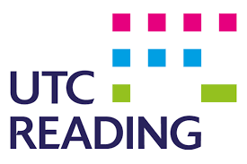
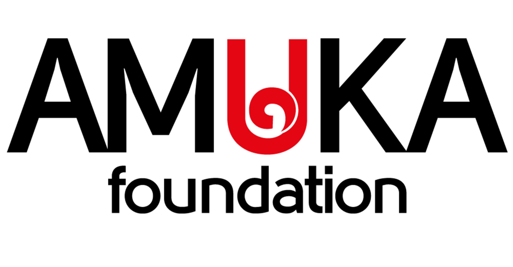

Our Plans
Natural Repellents Oils
To combat jiggers, we decided to repel the parasites with natural repellents such as rosemary and lavender oils.
This oil, diluted with ethanol, can be sprayed around the room using simple spray bottles, which can ward off the pests easily.
We plan to educate the local people on how to make this oil and to source the raw materials from Nairobi. We will also attempt
to grow these plants within the local area to reduce carbon emissions.
Chilli Fencing
Chilli fencing is a popular technique for deterring elephants, involves sisal string, chillies and waste engine oil.
All of these materials are very easy to obtain for repairing fences, so it is eminently practical.
Used by farmers from Kenya to Tanzania, it has had plenty of local success, though many do not know how it works, so we plan to educate the locals and their children on the intricacies of this technique.
Children can also learn to grow chillies as an extra-curricular activity.
Chilli-growing is a therapeutic activity which will benefit both the children's mental and physical health.
Locals are also able harvest the chillis and sell them, as an extra source of income, or use them to enhance their cuisine.
Furthermore, this chilli fencing technique can be implemented in local towns or villages if the school project is successful.
Biogas
Our solution to the energy problem is to construct a biogas plant with engines to produce electricity near the school. Biogas is chosen as it can be produced from cow manure from local farming communities, so the fuel costs are very low. Other methods from solar panels to connecting to the main electricity grid are examined, but they fell short due to the high cost attached to them.

